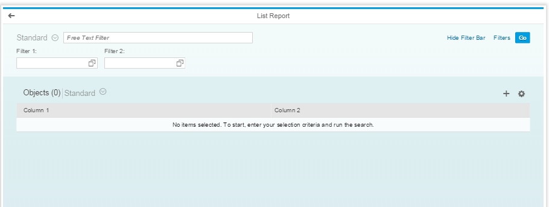
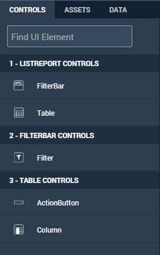
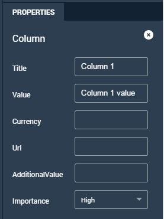

List Report
The List Report contains a filter bar above a table.
-
A filter bar with one filter
-
A table

You add filters to the List Report by dragging the Filter control to the Outline pane. Add the properties for each filter in the Properties pane.
The sections in the List Report template are shown below:
Control palette

Outline

Properties

BUILD lets you add one or more action buttons as well as columns to the table by dragging them to the Outline pane. The ActionButton must be placed above the columns. As with the FilterBar controls, you add properties for each action button or column in the Properties pane.
As you add filters, columns, buttons, and properties to your list report, the changes are displayed in the Preview pane. You cannot make changes in the Preview pane, however. You can change the order of the filters and the table columns in the Outline pane.
The following is an example of a completed List Report. It contains two filters, five columns, and two action buttons.